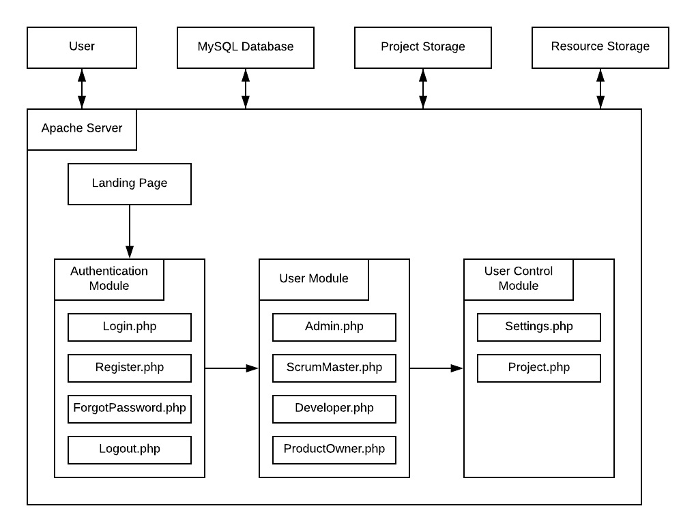
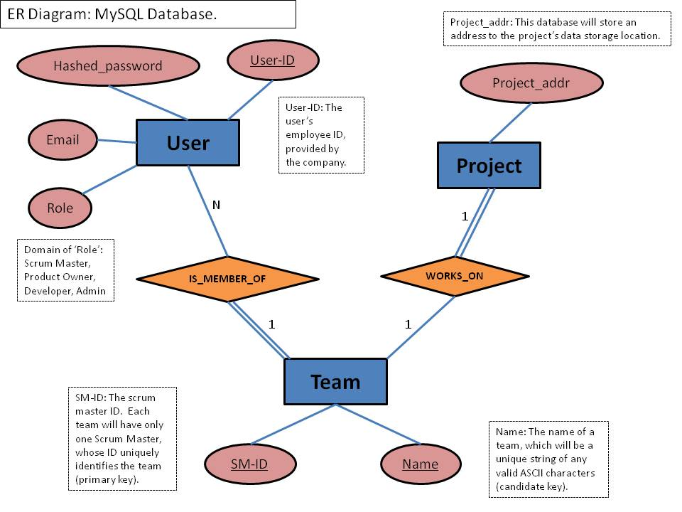

Recently, Toyota has been undergoing a Scrum "transformation". Due to the Scrum model being such a recent addition to the company, tools to aid its processes have become a necessity. The scrum tool our team will be focused on is a web application that will be designed to allow for tracking and estimating of team availability with reporting for planned and actual capacity results. Possible users include admin, Scrum Master, Product Owner, and Team Member. Each of these roles will be able to login to the web app and view their current project and its team availability/capacity data, but within the permissions constraints of their user roles. The scrum tool will allow for team members to input the availability they have to devote to the current sprint (the tool conventionally assumes a 1-week sprint) , as well as any time off they have, so team leaders can see who they have available and when. The tool will also estimate the team's capacity for the sprint based on factors such as story points. At the end of the sprint, the actual work done - measured in points - will also be input. When the point value for actual work done is input, the scrum tool will compare that result to the work of the previous sprint. This data will be used to keep track of the project burndown as each week goes along, and to adjust capacity estimations based on previous sprints.
The following chart illustrates the flow of data used in the web application:

The MySQL database that supports the user module of the scrum tool web application is illustrated by the following ER diagram.
